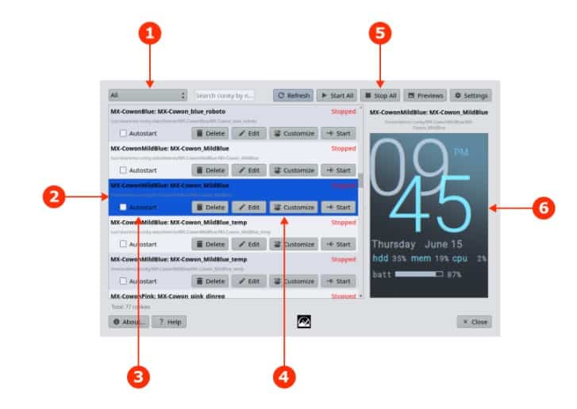
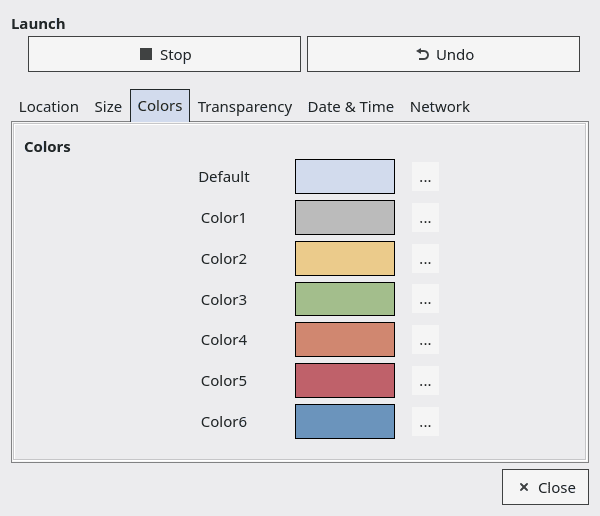
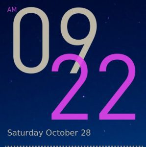

MX Conky Help
Background
MX Conky is a tool whose goal is to render the use and customization of conky scripts available to a wider and non-technical audience. It consists of a gui program and an associated data file of conkies that have been tested and edited for use in MX Linux.
Conky is an extremely versatile system monitoring utility that can display on your desktop a wide variety of information. Many creative conky scripts exist that have expanded its original scope to include music, email, weather, updates, etc. Its range has been further extended with the use of Lua, a lightweight and powerful programming language.
Many users find conky configurations (“conkies”) difficult to customize. They come from many different sources, they often follow no consistent configuration layout, many older ones no longer work for one reason or another, and the text itself is difficult to understand.
MX Conky was created to provide an easy starting point for users lacking prior experience. The 2025 upgrade completely reworks it into a full-featured conky manager. Some users, especially those with prior versions, may wish to add Conky Manager (conky-manager2) as an auxillary tool.
Use
NB: do not put a conky config into your /home folder (~/.conkyrc) as traditionally recommended, but into the hidden folder ~/.conky/ instead.

The main window of MX Conky has the following elements:
- The filter window allows you to restrict conkies shown to a certain location or condition.
- Each conky found following the filter setting is displayed in a separate entry.
- An autologin checkbox allows you to set a conky to appear on the desktop on login. More than one conky can be set.
- A group of control buttons for the individual conky make changes easier.
- Delete. The conky will be permanently removed from its location.
- Edit. Opens the conky script in a text editor. If the conky is one of those installed by default into /usr/share/mx-conky-data/themes/ then you will be prompted to copy it into your Home directory before editing.
- Customize. Launches a separate window for advanced editing.
- Start/Stop. Sets the running state for the current session.
- A group of system buttons:
- Refresh. Search and display all conkies matching the Settings filter.
- Start all. Display all conkies enabled to start.
- Stop all. Hide all running conkies.
- Previews. Create a preview for a selected conky.
- Settings. Determine the conky locations to be included.
- The preview window. If no preview is shown use the system button to create one.
Customize window

The 6 tabs are self-explanatory, with the exception of Colors. In the image above, you can see the colors that were used in the selected conky. You will find those colors listed in the conky script itself, but it is greatly easier to change them with MX Conky.
To understand how to proceed, let’s use MX Conky to alter the color of a default conky, taking MX-Cowan_less as our example. Here is the original:

Launch MX Conky, navigate to that conky and open it, and click on Run so you can see it while you work. Here is the Color field you will see in the Colors tab of the Customize window:
Now let's change the purple to, say, dark orange. Click the little change box with three dots to the right of the purple "Color2" and use one of three ways to change it:
- Click in the "Color name" box and delete everything in it, including the hash symbol; then type in "dark orange" (without the quotes)
- Use the color wheel to select a dark orange color you like, following the tool tip you see when you hover the cursor over it
- Click on the little eyedropper and use it to select an orange color from anywhere on your screen (the Firefox icon, for example)
The result will be an instant change to the conky something like this:
Notice that it took less than one minute to make the change!
Tips and Tricks
Technical Details
- The data package that is included with MX Conky (mx-conky-data) is installed into /usr/share/mx-conky-data/themes/.
- Selection of conkies to be included is based primarily on simplicity and aesthetics.
- Every conky included by default with MX-Conky is accompanied by a source file indicating the original creator and a thumbnail image.
- Conkies included use both old and new syntax. Conkies with old syntax can be converted to the new one in the following manner:
- The included conkies are based on the work of various artistic creators. They have been updated for function (e.g., switching to new network interface names), restructured to work with MX Conky and edited for simplicity.
- To add a new conky so it will work with MX Conky:
- First use Conky Manager to see if it will show at all on MX Linux. (If not, try changing the transparency to pseudo-transparent.)
- Open up the script, and collect all the different instances of color name/code inside braces (e.g., {color forestgreen} or {color 228B22})
- Create a color declaration above the word TEXT somewhere by making a list like this (compare one of the MX conkies if unsure):
- color0 forestgreen
- color1 EAEAEA
- etc.
- Use Edit > Replace to substitute all the instances of a name or code with its list name (e.g., so all "forestgreen" will be replaced by "color0"
- Save and exit
- Now you will be able to change all occurences of a certain color following the MX Conky procedure outlined above.
- If your new conky works with MX Conky and meets the selection criteria, please submit it on the Forum to be considered for inclusion.
Resources
Development history: Jerry3904 and Adrian